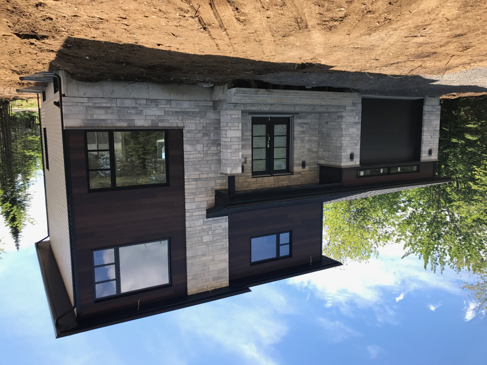

CONTEMPORAIN
01 / VOLUMES & CONTRASTES

Revêtements extérieurs · Québec
Revêtements extérieurs, moulures sur mesure et finitions soignées pour vos projets, des premières idées jusqu'aux derniers détails.
LE PORTFOLIO
Explorez les volumes, les contrastes et les détails de réalisations MIR. Gardez vos inspirations pour imaginer votre propre projet.
Une façade se lit aussi dans ses lignes de finition : les encadrements, les pignons et les transitions entre les matières.
Aucune réalisation dans votre sélection. Utilisez le bouton + sur une photo pour la garder ici.
Ces photographies proviennent du portfolio actuel de MIR. Les marques, profils et couleurs exacts seront documentés avec l’équipe pour les futures fiches de projets.
LE STUDIO MATIÈRES
Choisissez vos matériaux et vos couleurs. Visualisez différentes combinaisons sur votre façade en 3D et travaillez à partir de votre propre plan PDF.
Ouvrir le studio Quatre élévations · Vue 3D · Détails de finition · Plan annotéFAIT POUR VOTRE PROJET
Un J, un L, un fascia, un cache-poutre ou une enveloppe de colonne. Donnez les dimensions de chaque côté et visualisez votre pièce avant de préparer votre liste.
Configurer mon pliage ↗LES MATÉRIAUX
Des gammes distinctes, leurs finis et leurs couleurs. Retrouvez les références et la documentation utiles au même endroit.
PARLONS DE VOTRE PROJET
Installation de revêtements extérieurs, choix de matériaux et pliages en acier ou en aluminium. L’équipe MIR vous accompagne à Québec.
1653, avenue des Affaires
Québec